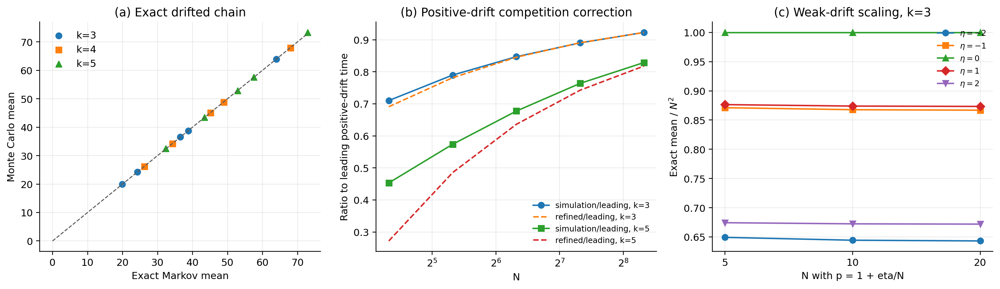

\(k\geq3\) 含漂移超边停止时间：严格模型、精确方程与渐近公式
结论先行
对于 \(k\geq3\)，仅给出一个标量“漂移因子”并不能唯一决定停止时间。必须先说明每个有序交易方向 \(i\to j\) 的概率。对任意合法流量矩阵 \(\Pi=(\pi_{ij})\)，停止时间的准确答案是单纯形上的离散 Poisson 方程；一般不存在只依赖 \((k,C,\sigma,p_{\mathrm{bias}})\) 的通用初等闭式。
本文给出两层结果：
- 完全一般且精确的结果：任意 \(\Pi\) 下的 Markov 方程 \[ u(\mathbf x) =1+\sum_{i\ne j}\pi_{ij} u(\mathbf x-\mathbf e_i+\mathbf e_j), \qquad u|_{\partial\mathcal S}=0. \]
- 与旧文档原意最接近的合法一参数模型：节点 0 为中心偏置节点， \(p_{\mathrm{bias}}\in[0,2]\)。该模型可严格导出漂移向量、协方差、 精确递推、弱漂移扩散 PDE，以及固定强漂移的相对指数集中和全矩极限； 正漂移竞争修正目前仍是待证明的二阶近似。
最重要的新结论是：正负漂移不对称。
- \(p_{\mathrm{bias}}<1\)：只有节点 0 具有负漂移；
- \(p_{\mathrm{bias}}>1\)：有 \(k-1\) 个外围节点同时具有负漂移。
因此，任何只通过 \(|p_{\mathrm{bias}}-1|\) 构造的对称校正函数，都不能在一般 \(k\) 下同时准确描述两侧。
1. 一般流量矩阵模型
1.1 余额过程
考虑一个包含 \(k\geq3\) 个参与者的多方支付通道。余额向量为
\[ \mathbf B(t)=(B_0(t),\ldots,B_{k-1}(t)), \qquad \sum_{i=0}^{k-1}B_i(t)=C. \]
固定每笔交易金额为 \(\sigma>0\)。第 \(t\) 笔交易选择付款方 \(i\) 和收款方 \(j\)，其中
\[ \Pr(S_t=i,D_t=j)=\pi_{ij}, \qquad i\ne j, \]
\[ \pi_{ij}\geq0, \qquad \sum_{i\ne j}\pi_{ij}=1. \]
交易后的余额为
\[ \mathbf B(t+1) =\mathbf B(t)+\sigma(\mathbf e_j-\mathbf e_i). \]
定义首次余额耗尽时间
\[ \tau =\inf\left\{t\geq0:\min_iB_i(t)=0\right\}. \]
这里的时间单位是“该超边内发生的交易笔数”。停止事件是首次方向性余额耗尽，不等同于协议层面的通道永久关闭。
1.2 漂移向量
一步增量为
\[ \boldsymbol\xi_t =\sigma(\mathbf e_{D_t}-\mathbf e_{S_t}). \]
节点 \(i\) 的漂移为
\[ \mu_i =\mathbb E[\xi_{t,i}] =\sigma\left( \sum_{j\ne i}\pi_{ji} -\sum_{j\ne i}\pi_{ij} \right). \]
向量形式为
\[ \boxed{ \boldsymbol\mu =\sigma\sum_{i\ne j}\pi_{ij}(\mathbf e_j-\mathbf e_i). } \]
由于每笔交易守恒资金，必有
\[ \mathbf1^\top\boldsymbol\mu=0. \]
但这不意味着每个 \(\mu_i\) 都等于零。一个标量漂移因子只有在同时规定如何生成整个 \(\Pi\) 后才有数学意义。
1.3 协方差
一步增量协方差为
\[ \boxed{ \Gamma =\sigma^2\sum_{i\ne j}\pi_{ij} (\mathbf e_j-\mathbf e_i)(\mathbf e_j-\mathbf e_i)^\top -\boldsymbol\mu\boldsymbol\mu^\top. } \]
严格地说，最后一项应理解为用货币单位漂移构成的外积；等价地，若 \(\mathbf d=\boldsymbol\mu/\sigma\)，则
\[ \Gamma =\sigma^2\left[ \sum_{i\ne j}\pi_{ij} (\mathbf e_j-\mathbf e_i)(\mathbf e_j-\mathbf e_i)^\top -\mathbf d\mathbf d^\top \right]. \]
2. 任意漂移下的精确停止时间方程
假设所有余额都是 \(\sigma\) 的整数倍，令
\[ X_i(t)=\frac{B_i(t)}\sigma, \qquad M=\frac C\sigma. \]
内部状态空间为
\[ \mathcal S_M^\circ =\left\{ \mathbf x\in\mathbb Z_{\geq1}^k: \sum_i x_i=M \right\}. \]
令
\[ u(\mathbf x)=\mathbb E_{\mathbf x}\tau. \]
对第一步条件化，得到
\[ \boxed{ u(\mathbf x) =1+ \sum_{i\ne j}\pi_{ij} u(\mathbf x-\mathbf e_i+\mathbf e_j), \qquad \mathbf x\in\mathcal S_M^\circ. } \]
边界条件为
\[ \boxed{ u(\mathbf x)=0, \qquad \min_i x_i=0. } \]
若一次转移使某个余额从 1 变为 0，则对应的下一状态直接使用边界值 0。
枚举内部状态后可写为
\[ \boxed{ (I-Q)\mathbf u=\mathbf1. } \]
还需要说明该线性系统确实存在唯一有限解。任选一个满足 \(\pi_{ab}=\rho>0\) 的有序方向，并令
\[ L=M-k+1. \]
从任意内部状态出发，连续选择方向 \(a\to b\) 至多 \(L\) 次就会使 节点 \(a\) 的余额降为零。因此每个长度为 \(L\) 的时间块内，吸收概率 至少为 \(\rho^L>0\)，从而
\[ \Pr_{\mathbf x}(\tau>nL) \leq(1-\rho^L)^n. \]
这同时证明 \(\tau<\infty\) 几乎必然、\(\mathbb E_{\mathbf x}\tau<\infty\)、 \(Q\) 的谱半径小于 1，以及
\[ \boxed{\mathbf u=(I-Q)^{-1}\mathbf1} \]
是唯一有限解。这是给定离散模型的精确答案，不是近似。对于小中等 \(k\) 和容量，可以用稀疏线性系统得到机器精度下的期望停止时间。
3. 合法的一参数中心偏置模型
下面给出一个与旧文档“节点 0 正/负漂移”意图一致、但不存在负概率的模型。
记
\[ p=p_{\mathrm{bias}}, \qquad 0\leq p\leq2, \qquad \delta=p-1. \]
每笔交易先从全部 \(\binom{k}{2}\) 个无序节点对中均匀选择一对。
- 若选中 \(\{0,r\}\)，则以概率 \(p/2\) 从 \(r\) 向 0 转账，以概率 \((2-p)/2\) 从 0 向 \(r\) 转账；
- 若选中两个外围节点 \(\{r,s\}\)，两个方向各取概率 \(1/2\)。
于是 \(p=1\) 表示完全无偏，\(p<1\) 表示节点 0 净流出，\(p>1\) 表示节点 0 净流入。
3.1 单节点增量概率
节点 0 的增量分布是
\[ \Pr(\Delta X_0=+1)=\frac pk, \]
\[ \Pr(\Delta X_0=-1)=\frac{2-p}{k}, \]
\[ \Pr(\Delta X_0=0)=1-\frac2k. \]
因此，条件于节点 0 本轮活跃，余额增加概率为
\[ \Pr(\Delta X_0=+1\mid0\text{ 活跃})=\frac p2. \]
任一外围节点 \(r\geq1\) 的增量分布为
\[ \Pr(\Delta X_r=+1) =\frac{k-p}{k(k-1)}, \]
\[ \Pr(\Delta X_r=-1) =\frac{k-2+p}{k(k-1)}, \]
\[ \Pr(\Delta X_r=0)=1-\frac2k. \]
条件于外围节点活跃，余额增加概率为
\[ \Pr(\Delta X_r=+1\mid r\text{ 活跃}) =\frac{k-p}{2(k-1)}. \]
这正是旧推导试图表达的“有效概率”，但现在它来自一个完整、合法的联合交易模型。
旧文档中 \(p/k\) 与 \((1-p)/k\) 的写法不正确；当 \(p>1\) 时后者为负。节点 0 的正确减小概率是
\[ \boxed{\frac{2-p}{k}}, \]
不是 \((1-p)/k\)。
3.2 漂移向量
在整数余额单位下，节点 0 的每笔交易平均增量是
\[ d_0 =\frac pk-\frac{2-p}{k} =\frac{2\delta}{k}. \]
每个外围节点的平均增量是
\[ d_r =\frac{k-p}{k(k-1)} -\frac{k-2+p}{k(k-1)} =-\frac{2\delta}{k(k-1)}. \]
因此
\[ \boxed{ \mathbf d =\left( \frac{2\delta}{k}, -\frac{2\delta}{k(k-1)},\ldots, -\frac{2\delta}{k(k-1)} \right), } \]
\[ \boxed{ \boldsymbol\mu=\sigma\mathbf d. } \]
容易检查 \(\sum_i d_i=0\)。
3.3 协方差矩阵
无论交易方向如何，同一无序节点对的增量外积相同。因此第二原始矩不受 \(p\) 影响：
\[ \mathbb E[\Delta\mathbf X\Delta\mathbf X^\top] =\frac{2}{k-1} \left(I-\frac1k\mathbf1\mathbf1^\top\right). \]
所以
\[ \boxed{ \operatorname{Cov}(\Delta\mathbf X) =\frac{2}{k-1} \left(I-\frac1k\mathbf1\mathbf1^\top\right) -\mathbf d\mathbf d^\top. } \]
货币余额的一步协方差为上述矩阵乘以 \(\sigma^2\)。
4. 中心偏置模型的精确递推
记
\[ q_{\mathrm{pair}}=\frac{2}{k(k-1)}, \qquad \theta=\frac p2. \]
对任意内部状态 \(\mathbf x\)，精确递推为
\[ \boxed{ \begin{aligned} u(\mathbf x)=1 &+q_{\mathrm{pair}} \sum_{r=1}^{k-1} \bigg[ \theta\, u(\mathbf x+\mathbf e_0-\mathbf e_r) +(1-\theta) u(\mathbf x-\mathbf e_0+\mathbf e_r) \bigg] \\ &+\frac{q_{\mathrm{pair}}}{2} \sum_{1\leq r<s\leq k-1} \bigg[ u(\mathbf x+\mathbf e_r-\mathbf e_s) +u(\mathbf x-\mathbf e_r+\mathbf e_s) \bigg]. \end{aligned} } \]
边界仍为 \(u=0\)。这就是本文推荐作为理论基准和数值 ground truth 的公式。
节点 0 与外围节点角色不同，但外围节点彼此可置换。因此可以把状态压缩为
\[ (x_0,\operatorname{sort}(x_1,\ldots,x_{k-1})), \]
显著减少线性系统规模，而且不改变均分初始状态的精确结果。
5. 漂移下的平方势函数恒等式
定义
\[ V(\mathbf B) =\sum_i\left(B_i-\frac Ck\right)^2. \]
一次 \(i\to j\) 交易给出
\[ \Delta V =2\sigma(B_j-B_i)+2\sigma^2. \]
对一般流量矩阵取条件期望：
\[ \boxed{ \mathbb E[\Delta V\mid\mathcal F_t] =2\sigma^2 +2\left( \mathbf B(t)-\frac Ck\mathbf1 \right)^\top\boldsymbol\mu. } \]
停止后可选停止得到精确占用恒等式
\[ \boxed{ \begin{aligned} \mathbb E V(\mathbf B(\tau))-V(\mathbf B(0)) =2\sigma^2\mathbb E\tau +2\mathbb E\sum_{t=0}^{\tau-1} \left( \mathbf B(t)-\frac Ck\mathbf1 \right)^\top\boldsymbol\mu. \end{aligned} } \]
零漂移时第二项消失，才恢复先前的简单鞅界。含漂移时不能继续直接使用零漂移下界作为“所有漂移都成立”的结论。
6. 任意容量下的严格路径界和漂移上界
假设初始均分
\[ X_i(0)=N, \qquad N=\frac{C}{k\sigma}. \]
任何节点至少需要累计 \(N\) 次净减小才能到零，而一笔交易最多使一个余额减小 1，所以
\[ \boxed{\tau\geq N\quad\text{几乎必然}.} \]
从而
\[ \boxed{\mathbb E\tau\geq N.} \]
对每个节点，
\[ X_i(t)-d_it \]
是鞅。在 \(\tau\) 停止后
\[ \mathbb E X_i(\tau)=N+d_i\mathbb E\tau. \]
若 \(d_i<0\)，利用 \(X_i(\tau)\geq0\)，得到
\[ \mathbb E\tau\leq\frac{N}{|d_i|}. \]
于是中心偏置模型有严格界：
6.1 负漂移 \(p<1\)
只有节点 0 漂移为负，故
\[ \boxed{ N\leq\mathbb E\tau \leq\frac{kN}{2(1-p)} =\frac{C}{2\sigma(1-p)}. } \]
6.2 正漂移 \(p>1\)
每个外围节点漂移为负，故
\[ \boxed{ N\leq\mathbb E\tau \leq\frac{k(k-1)N}{2(p-1)} =\frac{(k-1)C}{2\sigma(p-1)}. } \]
这些上界同时是强漂移极限的首阶时间尺度。
7. 大容量形式扩散近似
当 \(N=C/(k\sigma)\) 较大时，对精确离散方程作二阶 Taylor 展开。令 \(u(\mathbf b)\) 表示从货币余额 \(\mathbf b\) 出发的期望停止时间，则
\[ \boxed{ \boldsymbol\mu^\top\nabla u +\frac12\operatorname{tr} \left(\Gamma\nabla^2u\right) =-1, } \]
定义域和边界为
\[ \mathbf b\in \left\{ \mathbf b\geq0:\sum_i b_i=C \right\}, \qquad u|_{\min_i b_i=0}=0. \]
这是由生成元二阶展开得到的单纯形对流—扩散 Poisson 方程。它保留 完整漂移向量和节点相关性，是比“最弱节点投影 + 有效上界拟合”更有 结构依据的连续近似；但仅有 Taylor 展开还不能证明离散退出时间期望 收敛，严格极限仍需处理边界、退出时间映射和一致可积性。
8. 弱漂移极限（内部对抗性复核完成，待外部独立核查）
若 \(p-1\) 固定且 \(N\to\infty\)，漂移会压过扩散，停止时间从 \(N^2\) 量级变为 \(N\) 量级。要得到漂移与扩散同时存在的非退化极限，应令
\[ \delta_N=p-1=\frac\eta N, \]
其中 \(\eta\) 固定。
定义缩放过程
\[ \mathbf Z^{(N)}(s) =\frac1N\mathbf X(\lfloor N^2s\rfloor). \]
极限漂移为
\[ \boldsymbol\beta_\eta =\left( \frac{2\eta}{k}, -\frac{2\eta}{k(k-1)},\ldots, -\frac{2\eta}{k(k-1)} \right). \]
极限生成元为
\[ \mathcal A_\eta =\boldsymbol\beta_\eta^\top\nabla +\frac1{k-1}\Delta_{\mathrm{tan}}. \]
形式极限的期望停止时间 \(a_\eta(\mathbf z)\) 应满足
\[ \boxed{ \boldsymbol\beta_\eta^\top\nabla a_\eta +\frac1{k-1}\Delta_{\mathrm{tan}}a_\eta =-1, \qquad a_\eta|_{\partial\mathcal S}=0. } \]
从均分点出发，渐近定理工作稿为
\[ \boxed{ \mathbb E\tau =N^2a_{k}(\eta)+o(N^2). } \]
\(a_k(\eta)\) 是 PDE 在 \((1,\ldots,1)\) 处的值。除少数特殊情形外，它需要数值求解，不应伪装成未经证明的初等闭式。
完整证明见 弱漂移退出时间极限证明包。 其四个闭合环节是：
- 增量均值为 \(\boldsymbol\beta_\eta/N\)，协方差趋于 \(A_0=2(I-\mathbf1\mathbf1^\top/k)/(k-1)\)；有界三角阵列不变原理 给出切向 Brownian 运动加常漂移的过程极限。
- 固定时域上的生存事件由有限个坐标运行最小值决定；每个坐标的极限 是方差 \(2/k>0\) 的一维带漂移 Brownian 运动，其运行最小值无原子， 因而首次出界时间收敛。
- 对所有内部初态建立统一 \(AN^2\) 均值界：\(\eta=0\) 用平方势函数， \(\eta>0\) 用任一外围负漂移坐标，\(\eta<0\) 用中心负漂移坐标。 强 Markov 分块随后给出 \[ \sup_{\mathbf x}\Pr_{\mathbf x} \{\tau_N>m\lceil2AN^2\rceil\}\le2^{-m}, \] 且 \(L_N/N^2\le2A+1\)，从而给出统一指数矩；对任意固定 \(q>0\)， \[ \mathbb E(\tau_N/N^2)^q\longrightarrow\mathbb ET^q. \]
- 极限协方差在切向子空间正定，Dynkin/Feynman–Kac 把期望退出时间 识别为上式 Dirichlet–Poisson 问题的唯一 \(H_0^1\) 变分弱解； 比较原理另给出唯一连续黏性解。只声称内部经典正则性，不声称角点处 \(C^2\) 光滑。
因此本节的状态从“形式命题”升级为“证明链闭合并完成内部对抗性审计的 定理工作稿”。逐环节审计见 弱漂移内部对抗性审计。 投稿前仍需由未参与推导的概率论研究者外部逐行核查，并补入所用不变 原理和 PDE 结果的精确定理编号。还须明确：公平随机选对多人模型已有 Sobel–Frankowski（2002）直接先例；三人和四人 Brownian/simplex 路线 分别已有 Alabert 等（2004）、Denisov–Wachtel（2024）以及 O’Connor–Saloff-Coste（2023）的先例。候选差异点是固定一般 \(k\) 的 中心偏置近临界全矩极限，而非公平模型或 \(k=3,4\) 基线。
正确的漂移强度判据应依赖 \(N\)，而不是旧文档中的 \(|p-1|<k/4\)。可用 Péclet 数判断：
\[ \mathrm{Pe}_0 \approx N|p-1| \quad\text{（中心节点）}, \]
\[ \mathrm{Pe}_{\mathrm{per}} \approx\frac{N|p-1|}{k-1} \quad\text{（外围节点）}. \]
- \(\mathrm{Pe}\ll1\)：近零漂移、\(N^2\) 时间尺度；
- \(\mathrm{Pe}=O(1)\)：使用弱漂移 PDE；
- \(\mathrm{Pe}\gg1\)：使用强漂移渐近式。
多项式消失漂移的统一相图
令
\[ p_N=1+\eta N^{-\alpha}, \qquad \eta\ne0,\quad \alpha\ge0. \]
则 \(\mathrm{Pe}_N=|\eta|N^{1-\alpha}\)，现有弱、强漂移证明可以统一为：
| 区间 | 时间尺度 | 停止时间极限 |
|---|---|---|
| \(0\le\alpha<1\) | \(N^{1+\alpha}\) | 缩放停止时间以 \(e^{-cN^{1-\alpha}}\) 相对集中于正负不对称常数，且全部固定正阶矩收敛 |
| \(\alpha=1\) | \(N^2\) | 带漂移 Brownian 单纯形退出及全部固定正阶矩收敛 |
| \(\alpha>1\) | \(N^2\) | 漂移在首阶消失，回到公平 Brownian 单纯形退出及全部固定正阶矩收敛 |
其中 \(\alpha>1\) 的关键新步骤是对平方势函数证明全状态一步期望增量 最终一致为正，从而得到统一 \(O(N^2)\) 均值界和指数矩。完整证明及 外部复核清单见 多项式消失漂移相图证明包。 这仍是内部工作稿；一维 \(1/N\) 弱不对称和小漂移转变已有先例，不能把 临界尺度本身写成原创发现。
9. 强漂移集中与矩渐近
以下令 \(k\) 固定、\(p\ne1\) 固定并令 \(N\to\infty\)。
本节原先只闭合了均值首阶式。现已通过自由延拓、最大型 Azuma–Hoeffding 早尾界、单负漂移坐标晚尾界与统一指数矩，将结论加强为： 对下文对应的 \(t_N^*\) 和任意固定 \(\varepsilon\in(0,1)\)，存在 \(c=c(k,p,\varepsilon)>0\)，使充分大 \(N\) 下
\[ \Pr\!\left(\left|\frac{\tau_N}{t_N^*}-1\right|>\varepsilon\right) \le (k+1)e^{-cN}, \]
并且对每个固定 \(q>0\)，
\[ \mathbb E\left(\frac{\tau_N}{t_N^*}\right)^q\longrightarrow1. \]
特别地，下列均值首阶式是这个更强定理的推论。完整逐步证明、指数矩 论证、边界条件和 12 项外部复核清单见 固定强漂移退出时间证明包。 当前状态是内部闭合工作稿，尚未通过独立概率论核查。
9.1 负漂移：中心节点唯一主导
当 \(p<1\) 时，节点 0 的负漂移速度为
\[ v_0=\frac{2(1-p)}k. \]
从初始距离 \(N\) 到达零的确定性时间为
\[ t_-^*=\frac N{v_0} =\frac{kN}{2(1-p)}. \]
外围节点具有正漂移。为使用标准鞅集中不等式，在同一独立交易方向序列上 把余额随机游走形式地延拓到 \(\tau\) 之后；该延拓不改变首次到零事件。 令
\[ M_i(t)=X_i(t)-N-d_it. \]
则 \(M_i\) 是鞅，且其一步差分绝对值有统一常数上界。对任意固定 \(\varepsilon\in(0,1)\)，令
\[ t_{-,\varepsilon}=\left\lfloor(1-\varepsilon)t_-^*\right\rfloor. \]
在 \(s\leq t_{-,\varepsilon}\) 时，中心节点的确定性均值至少为 \(\varepsilon N\)，每个外围节点的确定性均值至少为 \(N\)。若此时已经 停止，则至少一个坐标鞅发生了量级为 \(N\) 的向下偏离。最大型 Azuma–Hoeffding 不等式和对固定 \(k\) 的并集界给出
\[ \Pr(\tau<t_{-,\varepsilon})\leq k\exp[-c_-(k,p,\varepsilon)N] \]
其中 \(c_->0\)。结合第 6 节的严格上界 \(\mathbb E\tau\leq t_-^*\)，有
\[ t_{-,\varepsilon}\Pr(\tau\geq t_{-,\varepsilon}) \leq\mathbb E\tau\leq t_-^*. \]
先令 \(N\to\infty\)，再令 \(\varepsilon\downarrow0\)，得到
\[ \boxed{ \mathbb E\tau =\frac{kN}{2(1-p)}[1+o(1)] =\frac{C}{2\sigma(1-p)}[1+o(1)]. } \]
该首阶表达式同时是第 6 节的严格上界。
9.2 正漂移：\(k-1\) 个外围节点竞争
当 \(p>1\) 时，每个外围节点的负漂移速度为
\[ v_r=\frac{2(p-1)}{k(k-1)}. \]
若只看确定性路径，所有外围节点同时在
\[ t_+^* =\frac N{v_r} =\frac{k(k-1)N}{2(p-1)} \]
到达零。与负漂移情形相同，对
\[ t_{+,\varepsilon}=\left\lfloor(1-\varepsilon)t_+^*\right\rfloor \]
应用最大型 Azuma–Hoeffding 不等式：在此之前，每个外围节点的确定性 均值至少为 \(\varepsilon N\)，中心节点的确定性均值至少为 \(N\)。因此
\[ \Pr(\tau<t_{+,\varepsilon}) \leq k\exp[-c_+(k,p,\varepsilon)N] \]
其中 \(c_+>0\)。再结合第 6 节的 \(\mathbb E\tau\leq t_+^*\)，可严格得到首阶极限
\[ \boxed{ \mathbb E\tau =\frac{k(k-1)N}{2(p-1)}[1+o(1)]. } \]
但有限 \(N\) 时，\(k-1\) 个负漂移节点竞争，最小停止时间会显著小于 \(t_+^*\)。这正是单一“最弱节点”近似容易系统性高估的原因。
9.3 正漂移的候选竞争修正（待证）
令
\[ m=k-1, \qquad \kappa_m =\mathbb E\max_{1\leq r\leq m}Z_r, \quad Z_r\overset{\mathrm{iid}}\sim N(0,1). \]
它可由一维积分计算：
\[ \kappa_m =\int_0^\infty \left[ 1-\Phi(x)^m-(1-\Phi(x))^m \right]dx. \]
外围节点在 \(t_+^*\) 附近的高斯波动具有等方差、等协方差。若对角元记为 \(\gamma\)、非对角元记为 \(c\)，由第 3.3 节可得一个重要消去：
\[ \gamma-c=\frac{2}{k-1}. \]
若对相关随机游走的联合首次到达时间使用 delta-method，并假设余项在 取最小值和期望后仍为 \(o(\sqrt N)\)，则得到候选展开
\[ \boxed{ \mathbb E\tau =t_+^* \left[ 1-\kappa_{k-1} \sqrt{\frac{k}{(p-1)N}} +o(N^{-1/2}) \right]. } \]
这比只使用 \(t_+^*\) 更准确，并明确体现外围节点数量造成的极值竞争。
这里的 \(N^{-1/2}\) 系数具有明确的协方差来源，但当前尚未证明联合首次 到达时间的强近似、过冲控制和期望余项。因此该式目前是有数值支持的 形式二阶渐近式，而不是已完成证明的渐近定理。
该修正式只在
\[ \kappa_{k-1}\sqrt{\frac{k}{(p-1)N}}\ll1 \]
时使用。如果括号内修正不小，应该回到精确 Markov 方程或对流—扩散 PDE，不能强行套用渐近展开。
10. 为什么不能沿用对称经验校正函数
旧文档提出的形式大致为
\[ h(p,k)=\exp[-\alpha(k)|p-1|^{\gamma(k)}]. \]
即使重新拟合参数，它仍存在结构问题：
- 负漂移由一个中心节点主导，正漂移由 \(k-1\) 个外围节点竞争；两侧不对称。
- 强漂移首阶时间分别为 \[ t_-^*=\frac{kN}{2(1-p)}, \qquad t_+^*=\frac{k(k-1)N}{2(p-1)}, \] 相差结构因子 \(k-1\)。
- 正漂移还存在 \(\kappa_{k-1}\sqrt{k/[(p-1)N]}\) 的极值修正，不能只由 \(|p-1|\) 表示。
- 漂移适用区间取决于 \(N(p-1)\)，旧条件 \(|p-1|<k/4\) 缺少容量尺度，而且当 \(p\in[0,2]\)、\(k\geq4\) 时几乎自动成立，不能判断扩散近似是否有效。
- 将多个相关余额过程投影成一个赌徒破产过程，需要额外证明；经验有效上界只能称为拟合参数，不能称为定理。
因此推荐用“精确 Markov 方程 + 弱漂移 PDE + 强漂移渐近式”替换 v5/v6 的单一经验闭式。
11. 数值验证
验证程序见 drift_experiments.py。
11.1 精确 Markov 方程与 Monte Carlo
实验覆盖
\[ k\in\{3,4,5\}, \quad N=8, \quad p\in\{0.4,0.7,1.0,1.3,1.6\}, \]
每个场景进行 30,000 次独立仿真。
| 指标 | 结果 |
|---|---|
| 场景数 | 15 |
| 精确值与 Monte Carlo 最大相对差 | 0.547% |
| 该 15 个场景的线性系统最大绝对残差 | \(8.88\times10^{-14}\) |
部分结果：
| \(k\) | \(N\) | \(p\) | Markov 精确值 | Monte Carlo | 95% 区间 | 相对差 |
|---|---|---|---|---|---|---|
| 3 | 8 | 0.4 | 19.9034 | 19.9019 | [19.8137, 19.9902] | 0.007% |
| 3 | 8 | 1.0 | 64.0000 | 63.9075 | [63.3985, 64.4165] | 0.145% |
| 3 | 8 | 1.6 | 24.2020 | 24.2418 | [24.1385, 24.3450] | 0.164% |
| 4 | 8 | 0.7 | 45.1650 | 45.0891 | [44.8181, 45.3600] | 0.168% |
| 4 | 8 | 1.3 | 48.9165 | 48.7410 | [48.4577, 49.0242] | 0.359% |
| 5 | 8 | 1.6 | 43.3636 | 43.4086 | [43.2119, 43.6054] | 0.104% |
11.2 强负漂移公式
在 \(k=3,5\)、\(N=20\sim320\)、\(p=0.5\) 的实验中，公式
\[ \frac{kN}{2(1-p)} \]
与 Monte Carlo 的最大相对差为 0.322%。这与“唯一负漂移中心节点主导”的理论一致。
11.3 强正漂移竞争修正
当 \(p=1.5\) 时，只使用首阶 \(t_+^*\) 会明显高估有限容量停止时间。加入竞争修正后的结果为：
| \(k\) | \(N\) | Monte Carlo | 首阶公式误差 | 竞争修正误差 |
|---|---|---|---|---|
| 3 | 20 | 85.23 | 40.8% | 2.72% |
| 3 | 80 | 406.62 | 18.0% | 0.19% |
| 3 | 320 | 1772.00 | 8.35% | 0.02% |
| 5 | 80 | 1083.94 | 47.6% | 6.11% |
| 5 | 160 | 2444.51 | 30.9% | 2.78% |
| 5 | 320 | 5305.04 | 20.6% | 1.31% |
这说明修正式的误差随 \(N\) 增大而收敛，但 \(k\) 较大、\(N(p-1)/(k-1)\) 不够大时仍应使用精确方程。
11.4 弱漂移 \(p=1+\eta/N\)
下表给出 \(N=20\) 的精确 Markov 结果 \(\mathbb E\tau/N^2\)：
| \(k\) | \(\eta=-2\) | \(\eta=-1\) | \(\eta=0\) | \(\eta=1\) | \(\eta=2\) |
|---|---|---|---|---|---|
| 3 | 0.6431 | 0.8669 | 1.0000 | 0.8733 | 0.6719 |
| 4 | 0.7776 | 0.9688 | 1.0635 | 0.9777 | 0.8218 |
结果随 \(N=5,10,20\) 已基本稳定，支持第 8 节的 \(N^2a_k(\eta)\) 弱漂移缩放；同时正负 \(\eta\) 的数值并不完全相同，再次说明对称 \(|p-1|\) 校正缺少理论依据。

原始结果：
12. 论文中建议采用的公式体系
定理：精确离散方程
对给定合法 \(\Pi\)，使用
\[ (I-Q)\mathbf u=\mathbf1, \qquad u|_{\partial\mathcal S}=0. \]
这是主定理和小规模 ground truth。
命题：中心偏置模型的漂移与协方差
使用第 3.2、3.3 节的 \(\mathbf d\) 与协方差矩阵；这些是逐步直接计算得到的精确公式。
定理：漂移上界
使用第 6 节的
\[ \mathbb E\tau\leq\frac{kN}{2(1-p)} \quad(p<1), \]
\[ \mathbb E\tau\leq\frac{k(k-1)N}{2(p-1)} \quad(p>1). \]
渐近定理工作稿：弱漂移
在 \(p=1+\eta/N\)、固定 \(k\)、\(N\to\infty\) 下，使用第 8 节已经 闭合并完成内部对抗性复核的单纯形对流—扩散退出与全矩极限；待外部 独立核查后冻结为论文定理。
渐近定理：强漂移首阶
在固定 \(p\ne1\)、固定 \(k\)、\(N\to\infty\) 下，使用第 9.1、9.2 节 由漂移上界和最大型 Azuma–Hoeffding 集中界得到的首阶式。
待证二阶命题：正漂移竞争修正
第 9.3 节的 \(N^{-1/2}\) 修正保留为待证命题和经验比较对象，直至联合 首次到达强近似与 \(o(\sqrt N)\) 期望余项得到证明。
不建议再把经验 \(h(p,k)\)、\(b_{\mathrm{eff}}\) 或拟合误差包络称为定理。它们若继续保留，应明确标为“经验回归基线”，并与精确 Markov 解在留出参数域上比较。